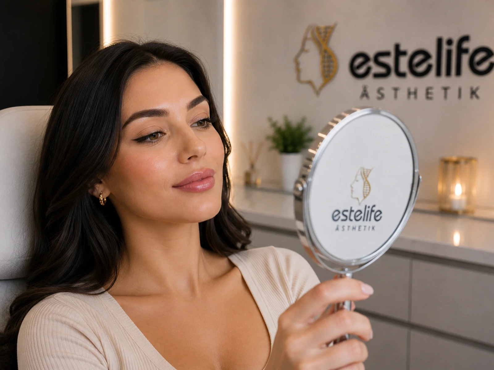

Değerlendirme & planlama
İhtiyaçlarınız ve başlangıç durumunuz kişisel olarak değerlendirilir.
Hyaluron dolgular dudak hacmini destekleyebilir, konturu belirginleştirebilir ve yüz oranlarını daha dengeli hale getirebilir. Önceliğimiz doğal görünen, yüze uyumlu sonuçlardır.
Danışmanlık talep et →
Tedavi öncesinde dudak şekli, profil, simetri ve yüz oranları değerlendirilir. Dolgu; kontur, hafif hacim veya asimetri düzeltme hedeflerine göre seçilmiş noktalara uygulanır.
İhtiyaçlarınız ve başlangıç durumunuz kişisel olarak değerlendirilir.
Uygulama bölgesi ve tedavi planı işleme uygun şekilde hazırlanır.
Tedavi, belirlenen protokole göre kontrollü ve profesyonel şekilde uygulanır.
İşlem sonrası bakım önerileri ve gerekiyorsa kontrol/seans planı paylaşılır.
Geçici şişlik ve morluk olabilir. Nihai görünüm şişlik indikten sonra değerlendirilmelidir.
Seans sayısı işleme, başlangıç durumuna ve kişisel yanıta göre değişir. Değerlendirme sonrasında uygun plan açıklanır.
Sosyal iyileşme süresi işleme göre değişir. Yukarıdaki süreler genel aralıklardır; kişisel bakım önerileri ayrıca verilir.
Hayır. Medikal estetik işlemlerde anatomi, iyileşme ve kişisel biyoloji sonucu etkilediği için herkes için aynı sonuç garanti edilemez.
Sorularınızı dinliyor ve hangi tedavinin başlangıç durumunuza uygun olabileceğini şeffaf şekilde açıklıyoruz.